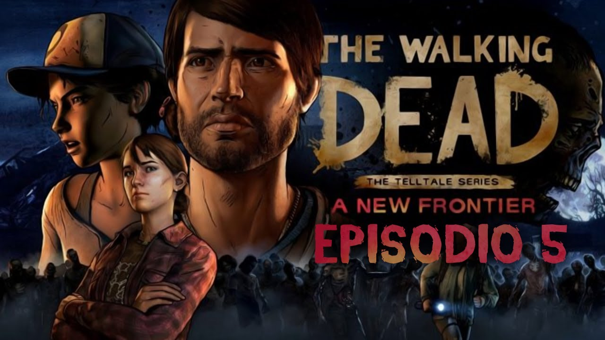

God of War es la vuelta de Kratos a los videojuegos tras la trilogía original. Esta nueva entrega para PlayStation 4, si bien mantendrá varios de los ingredientes indivisibles de su jugabilidad, apostará por un nuevo comienzo para el personaje y una ambientación nórdica, ofreciéndonos una perspectiva más madura y realista de la mitología de dioses y monstruos milenarios habitual en la serie de títulos. En God of War, Kratos será un guerrero más curtido y pasivo, pues tendrá que desempeñar el rol de padre en un frío y hostil escenario, al que parece haberse retirado para olvidar su pasado.
Creado por los autores de Dark Messiah of Might and Magic, Dishonored para PC es un juego de acción y aventura en primera persona, con una ambientación futurista steampunk, en el que controlamos a un letal asesino en un mundo corrupto, dominado por una dictadura. Tendremos que usar nuestras habilidades mágicas y nuestras armas para acabar con los enemigos, combinando acción directa y sigilo en un mundo con gran libertad de movimiento.
En Resident Evil 2 Remake se nos vuelve a contar una de las historias más conocidas del mundo de los videojuegos: la infección del Virus-T por las calles de Raccoon City, el primer gran brote de virus zombificador a manos de UMbrella. En esta historia tenemos a dos protagonistas. Por un lado está Leon S. Kennedy, un joven oficial que empieza su carrera en el Departamento de Policía de Raccoon... y salva la vida por llegar tarde debido a motivos algo confusos (una ruptura, resaca...). Por otra parte, está Claire Redfield, hermana de Chris, uno de los protagonistas del Resident Evil original.

Telltale Games nos ofrece una adaptación de los tebeos que originaron esta popular saga de muertos vivientes en el episodio 5 para PC. A través de una aventura gráfica con un toque de acción podemos revivir la historia original en este juego que llega a múltiples plataformas de manera episódica. En este nuevo capítulo podremos continuar, eso sí asumiendo todas las decisiones que hayamos tomado anteriormente, que influirán en el desenlace de la historia.